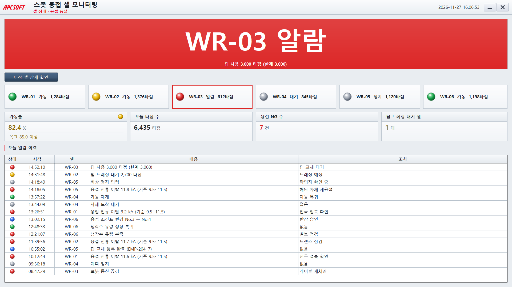
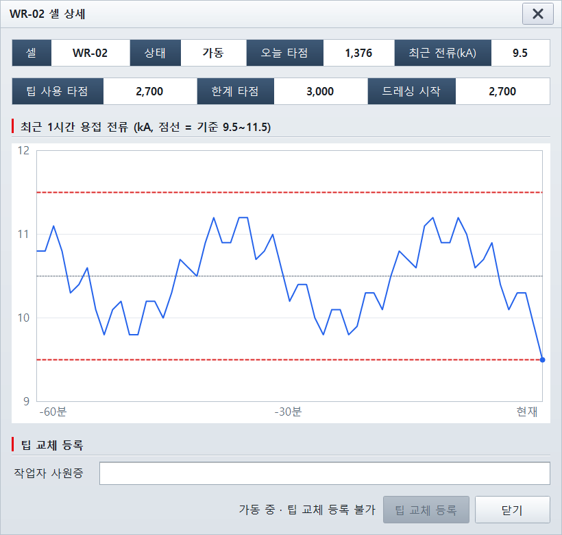
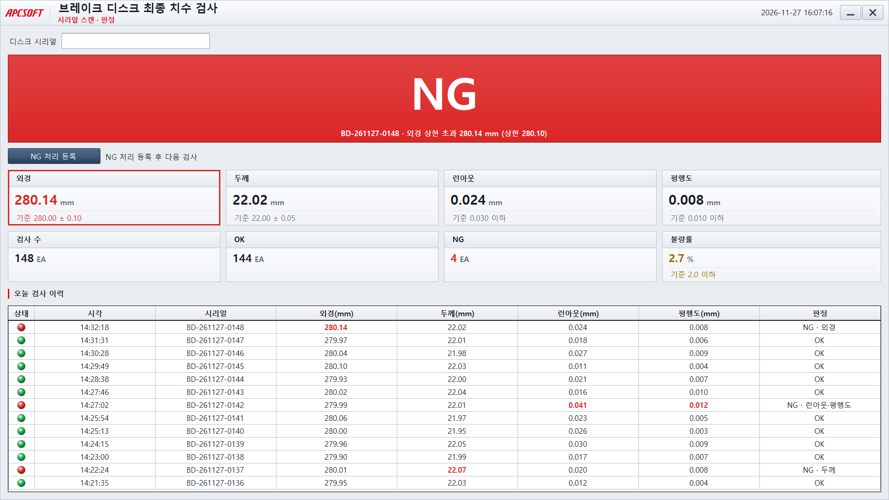
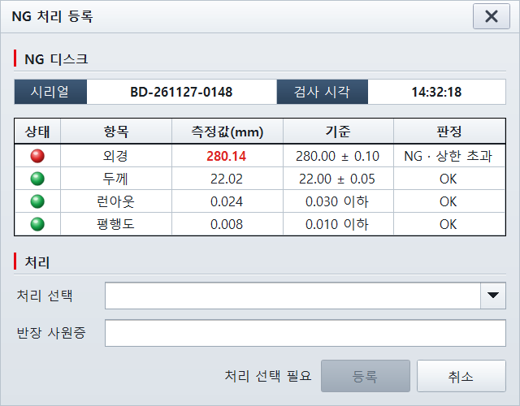
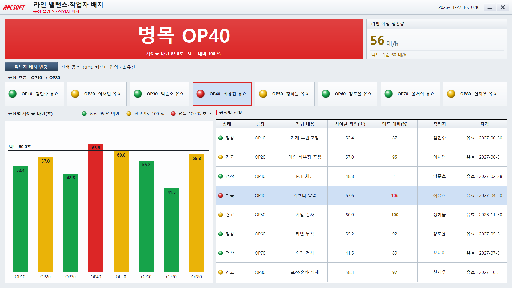
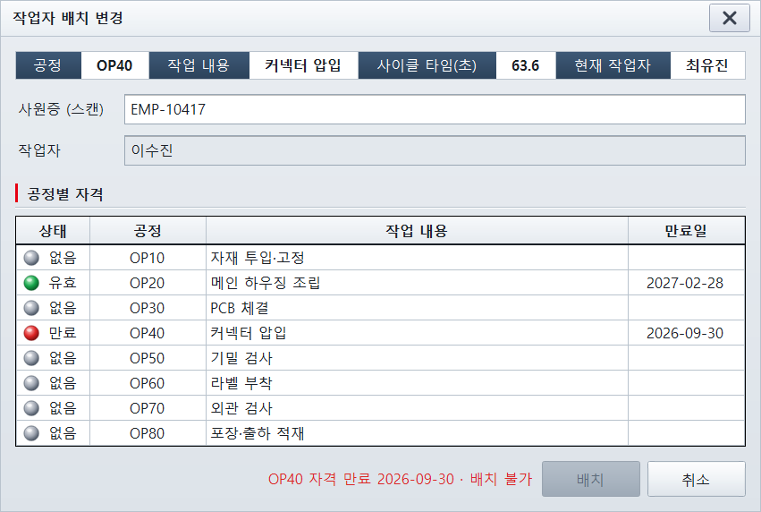
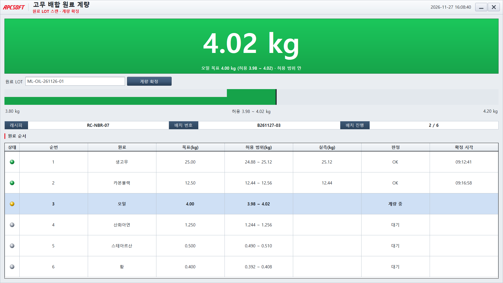
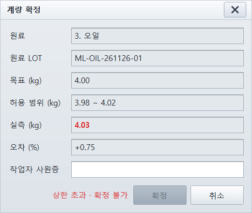

이번 시연은 두 단계로 진행했습니다. 1단계에서 에이전트가 화면을 끝까지 만든 뒤 스킬의 확인 질문 형식으로 메인 세션에 질문을 보냈습니다. 메인 세션은 결과를 채점하고 질문에 대한 답만 돌려보냈습니다. 2단계에서 에이전트가 그 답대로 고쳐 다시 빌드·render를 돌렸고, 메인 세션이 최종 결과를 다시 채점했습니다. T1·T2는 스킬 템플릿으로 만들 수 있는 새 도메인이고, C1·C2는 템플릿에 없어 기존 컨트롤을 조합해야 하는 화면입니다. 네 시연 모두 빌드 경고·오류 0, render 점검 0건으로 끝났습니다. 합계는 1차 77점, 최종 78점입니다.
| 시연 | 시작점 | 직접 만든 것 | 1차 | 최종 | 질의로 바뀐 것 |
|---|---|---|---|---|---|
| T1 스폿 용접 셀 | EquipmentView + EquipmentDetailDialog | 없음 | 19 | 19 | 판정판 순위에 정지 셀 추가(알람 > 정지 > 경고). 샘플 화면은 그대로 |
| T2 디스크 치수 검사 | JudgeView + RecipeDialog 골격 | 없음 | 20 | 20 | NG 미등록이면 다음 스캔 거부 + 버튼 옆 "NG 처리 등록 후 다음 검사" |
| C1 라인 밸런스 | 조합 (EquipmentView 줄 구성만 참고) | 막대그래프 BarBoard(Label 조립 + Slots) | 20 | 20 | 생산량 미달 카드 경고색, 자격 만료 배치자 타일·표 경고, 막대 클릭 선택 |
| C2 원료 계량 | 조합 (JudgeView 구조만 참고) | 계량 막대 WeighBar(Label 조립) | 18 | 19 | 막대 목표 ±5 % 확대(허용 띠가 가운데로), 산화아연 0.000 kg 표시, 투입 중 회색, 같은 원료 LOT 교체 허용 |
| 합 | 77 | 78 | 질문 32개 중 9개는 바꾸라고, 23개는 현행 유지로 답함 |
항목 10개를 각 2점(✓ 2, △ 1)으로 채점합니다. 5번은 T에서는 템플릿 활용, C에서는 새 레이아웃을 봅니다. 2번은 스캔과 Primary 하나가 판정판 바로 아래에 있는지 봅니다. 샘플 값끼리의 정합성은 보지 않습니다. 메인 세션은 질문에만 답했기 때문에, 질문 밖의 감점(T1 판정판 높이, C2 표 행 높이)은 최종 점수에도 남았습니다.
| 결과 | 나온 시연 | 판단 | 메모 |
|---|---|---|---|
| 질의응답의 효과 | C2 | 효과 | 에이전트가 자기 약점을 질문으로 올렸습니다(Q1 "1.25 ~ 1.25", Q3 허용 띠 1 %). 채점에서 본 약점과 같았고, 답을 받아 고치자 5번이 △ → ✓가 됐습니다 |
| 질문 대부분이 "현행 유지" | 전부 | 관찰 | 질문 32개 중 23개(72 %)는 현행 유지로 답했습니다. 데이터 모양 질문(사원 DB 조회, 코드 목록, 데이터 형식)은 네 시연 모두에서 나왔지만 화면 품질과는 관계가 없습니다 |
| 질문 밖의 레이아웃 약점은 남음 | T1 · C2 | 관찰 | T1은 판정판 190 px가 크다는 점을 모호점에는 적었지만 질문으로 올리지 않았습니다. C2는 6행 표가 80 px 행으로 늘어난 점을 언급하지 않았습니다. 확인 질문은 기준값·해석·배치·데이터를 다룰 뿐, PNG 마무리는 다루지 않습니다 |
| 판정판 높이 기준 없음 | T1 (R4·R5-M1과 같은 뿌리) | 손볼 곳 | 판정판이 없는 EquipmentView에 판정판을 더하면서 높이를 S(190)으로 임의로 정했습니다. 1127 시연에서도 판정판이 옆 표 높이에 끌려 커졌습니다. 판정판 높이 기준을 지침에 적을 후보입니다 |
| Label 조립 막대 | C1 · C2 | 관찰 | 두 시연 모두 막대(세로·가로)를 Label 조립으로 직접 만들었습니다. C1은 Slots로 고르게 배치해 잘 나왔지만, C2는 허용 띠와 채움이 같은 초록이라 띠 경계가 묻힙니다. 두 번 나왔으므로 막대 컨트롤이나 지침 예시를 둘 후보입니다 |
| 판정판 큰 글자가 측정값 | C2 | 편차 | OK/NG 대신 저울 현재값을 큰 글자로 써도 되는지 지침에 없습니다. 결과는 좋았습니다 |
| 기타 | T1 · T2 · C1 | 편차 | AddContentFill 뒤 AddContent를 붙이는 순서가 허용되는지(T1) · Row 안 비활성 이유 위치(T2, R5-M2와 합쳐 2회) · 타일 "이름만" 규칙과 작업자·자격 표시 요구의 충돌(C1: 타일 8개가 모두 "유효"라 글자가 정보를 주지 않음) |
| 시연 | 1단계 시간 | 1단계 도구 | 1단계 토큰 | 2단계 시간 | 최종 토큰 |
|---|---|---|---|---|---|
| T1 용접 셀 | 3분 15초 | 22 | 117k | 22초 | 120k |
| T2 디스크 검사 | 3분 29초 | 15 | 116k | 17초 | 118k |
| C1 라인 밸런스 | 7분 12초 | 26 | 126k | 약 48초 | 129k |
| C2 원료 계량 | 4분 50초 | 21 | 128k | 39초 | 137k |
| 합 | 18분 46초 | 84 | 487k | 약 2분 | 504k |
시연 에이전트 4개의 토큰만 셌습니다(하네스 집계). 2단계는 답을 반영하는 데 시연마다 1분이 채 안 걸렸고, 토큰은 2~9k 늘었습니다. C1의 2단계 시간은 하네스가 8분 0초로 집계했는데 1단계와 합산된 값으로 보여, 그 차이를 적었습니다.


| # | 항목 | 1차 | 최종 | 근거 |
|---|---|---|---|---|
| 1 | 3초 정보 | ✓ | ✓ | 최상단 판정판에 최악 셀과 이유 |
| 2 | 주 동작 | ✓ | ✓ | 판정판 바로 아래 Primary [이상 셀 상세 확인] 하나 |
| 3 | 메인 막기 | ✓ | ✓ | 이상 셀이 없으면 버튼 꺼짐 + 이유 |
| 4 | dialog 차단 | ✓ | ✓ | 가동 중이면 [팁 교체 등록] 꺼짐 + "가동 중 · 팁 교체 등록 불가", ScanOnly |
| 5 | 템플릿 활용 | ✓ | ✓ | EquipmentView·EquipmentDetailDialog, 판정판만 추가 |
| 6 | 레이아웃 마무리 | △ | △ | 판정판 190 px로 화면 1/4을 차지하는데 이유 글자는 작음, 값 카드 아래 빈 공간(질문 밖이라 그대로) |
| 7 | 빌드·점검 | ✓ | ✓ | 0/0, 0건 |
| 8 | 요청 항목 | ✓ | ✓ | 타일·카드 4·이력·추이·팁 타점·교체 등록 |
| 9 | 경계값 | ✓ | ✓ | 9.5·11.5 kA, 2,700 타점 샘플 |
| 10 | 지침 피드백 | ✓ | ✓ | 판정판 높이, 스캔 없는 화면의 Primary |
| # | 에이전트 질문 | 메인 답 | 변경 |
|---|---|---|---|
| 1 | 전류 범위 밖 = 알람. 경고 단계를 둘까? | 두지 않음 | — |
| 2 | 팁 3,000 알람 셀을 드레싱 대기 수에 포함할까? | 포함 안 함 | — |
| 3 | 가동률을 셀 상태에서 계산할까? | 소스 값 | — |
| 4 | 정지 셀도 판정판에 올릴까? | 올림. 알람 > 정지 > 경고, 대기 제외 | ✓ |
| 5 | 대기 셀도 팁 교체를 막을까? | 가동 중에만 막음 | — |
| 6 | Primary 없이 타일 클릭만? | Primary 유지 | — |
| 7 | 사번 조회까지? | 형식 검증만 | — |
| 8 | 조치를 코드 목록으로? | 자유 텍스트 | — |
2단계: WeldRules.Worst가 PanelRank(알람 3 > 정지 2 > 경고 1)로 순위를 매기고, OnPanel이 대기 셀을 뺍니다. 같은 단계 셀이 여러 대면 "WR-0x 외 N대 정지"로 씁니다. 코드에서 확인했습니다.


| # | 항목 | 1차 | 최종 | 근거 |
|---|---|---|---|---|
| 1 | 3초 정보 | ✓ | ✓ | 전체 폭 NG + 이유·측정값·상한 |
| 2 | 주 동작 | ✓ | ✓ | 스캔 + 판정판 바로 아래 Primary 하나 |
| 3 | 메인 막기 | ✓ | ✓ | 폐기 시리얼 검사 거부. 최종에서 NG 미등록이면 다음 스캔도 거부하고 버튼 옆에 이유를 보임 |
| 4 | dialog 차단 | ✓ | ✓ | 처리 선택·반장 스캔 전에는 꺼짐 + "처리 선택 필요", 폐기는 빨간 확인창 |
| 5 | 템플릿 활용 | ✓ | ✓ | JudgeView 구조, 샘플은 소스로 |
| 6 | 레이아웃 마무리 | ✓ | ✓ | 카드 줄 정렬, 이력 표 높이에 맞춤, 범위 밖 값만 빨강 |
| 7 | 빌드·점검 | ✓ | ✓ | 0/0, 0건 |
| 8 | 요청 항목 | ✓ | ✓ | 전부 |
| 9 | 경계값 | ✓ | ✓ | 280.10·279.90·21.95·22.05·0.030·0.010 OK 행 |
| 10 | 지침 피드백 | ✓ | ✓ | Row 안 비활성 이유 위치 등 |
| # | 에이전트 질문 | 메인 답 | 변경 |
|---|---|---|---|
| 1 | 재가공 후 재검사 횟수 제한? | 두지 않음 | — |
| 2 | 불량률 경고 초과 vs 이상? | 초과 유지 | — |
| 3 | 반장 명단을 소스에서 확인? | 형식만 | — |
| 4 | 같은 시리얼 재스캔 막을까? | 허용 | — |
| 5 | NG 미등록 상태에서 다음 스캔을 막을까? | 막음 + 이유 글 | ✓ |
| 6 | 측정 카드를 판정판 오른쪽으로? | 현행 유지 | — |
| 7 | 키보드 직접 입력 허용? | 스캔 전용 | — |
| 8 | 집계를 이력에서 계산? | 별도 값 | — |
2단계: _pendingNg가 있으면 스캔을 e.Accepted = false로 거부하고, 측정과 저장을 하지 않습니다. 등록하면 해제됩니다. PNG에서 1차에 비어 있던 버튼 옆 자리에 이유 글이 생겼습니다.


| # | 항목 | 1차 | 최종 | 근거 |
|---|---|---|---|---|
| 1 | 3초 정보 | ✓ | ✓ | "병목 OP40" + 106 %, 옆에 생산량 56 대/h |
| 2 | 주 동작 | ✓ | ✓ | 판정판 바로 아래 Primary 하나 + 선택 공정 글 |
| 3 | 메인 막기 | ✓ | ✓ | 선택 공정이 항상 있어 꺼질 일이 없고, 막을 동작은 dialog에 있음 |
| 4 | dialog 차단 | ✓ | ✓ | "OP40 자격 만료 2026-09-30 · 배치 불가" + [배치] 꺼짐, ScanOnly |
| 5 | 새 레이아웃 | ✓ | ✓ | Label 조립 막대 + 택트선 + 값 글자, Slots로 고른 간격, 범례 |
| 6 | 레이아웃 마무리 | ✓ | ✓ | 막대와 표 높이 맞춤. 최종에서 생산량 미달 카드가 경고색으로 바뀜 |
| 7 | 빌드·점검 | ✓ | ✓ | 0/0, 0건 |
| 8 | 요청 항목 | ✓ | ✓ | 흐름·막대·기준선·표·자격·dialog 전부 |
| 9 | 경계값 | ✓ | ✓ | 95 %(OP20)·100 %(OP50) 경계 샘플이 경고 |
| 10 | 지침 피드백 | ✓ | ✓ | 타일 문구 규칙 충돌, 범례 여백 |
| # | 에이전트 질문 | 메인 답 | 변경 |
|---|---|---|---|
| 1 | 100 %를 병목으로? | 경고 유지 | — |
| 2 | 생산량이 택트 기준보다 낮으면 경고색? | 경고색 | ✓ |
| 3 | 자격 만료 당일부터 막을까? | 당일까지 유효 | — |
| 4 | 이동·맞교대 허용? | 예비 인원만 | — |
| 5 | 판정판 문구 변경? | 유지 | — |
| 6 | 만료 배치자 타일·표 경고? | 타일은 나쁜 쪽 색, 표는 "만료 · 날짜" 경고색 | ✓ |
| 7 | 막대 클릭으로 선택? | 선택되게 | ✓ |
| 8 | 데이터 형식 | 현행 유지 | — |
2단계: TileKind는 자격이 유효하지 않으면 알람은 그대로 두고 나머지는 Warn으로 올립니다. 막대와 공정 코드 Label의 BarBoard.BarClicked를 MainView.Select로 연결했습니다. 샘플에 만료 배치자가 없어 6번은 코드로만 확인했습니다.


| # | 항목 | 1차 | 최종 | 근거 |
|---|---|---|---|---|
| 1 | 3초 정보 | ✓ | ✓ | 저울값을 크게 + 원료·목표·범위·상태 |
| 2 | 주 동작 | ✓ | ✓ | 판정판 바로 아래 LOT 스캔 + Primary 하나 |
| 3 | 메인 막기 | ✓ | ✓ | 다른 원료 LOT 거부, 범위 밖이면 확정 꺼짐 + 이유 |
| 4 | dialog 차단 | ✓ | ✓ | "상한 초과 · 확정 불가" + [확정] 꺼짐 |
| 5 | 새 레이아웃 | △ | ✓ | 1차: 막대가 0~상한이라 거의 꽉 차고, 허용 띠는 오른쪽 끝 1 %. 최종: 목표 ±5 % 확대로 허용 띠가 가운데 45~55 %에 오고, 현재값 위치가 보임 |
| 6 | 레이아웃 마무리 | △ | △ | 산화아연 "1.25 ~ 1.25"는 "1.244 ~ 1.256"으로 해결됐지만, 6행 표의 행이 80 px로 늘어난 점은 질문 밖이라 그대로. 허용 띠와 채움이 같은 초록 |
| 7 | 빌드·점검 | ✓ | ✓ | 0/0, 0건 |
| 8 | 요청 항목 | ✓ | ✓ | 전부 |
| 9 | 경계값 | ✓ | ✓ | 25.12·12.44·4.02 경계 OK |
| 10 | 지침 피드백 | ✓ | ✓ | 측정값 판정판, 막대 높이 기준 |
| # | 에이전트 질문 | 메인 답 | 변경 |
|---|---|---|---|
| 1 | 산화아연 범위가 "1.25 ~ 1.25"로 보임. 정확한 값으로? | 한 값으로 보이면 안 됨. 0.000 kg 표시 | ✓ |
| 2 | 하한 미달(투입 중)을 회색으로? | 회색 + "투입 중" | ✓ |
| 3 | 허용 띠가 1 %로 얇음. 확대 눈금을 쓸까? | 목표 ±5 % 구간 | ✓ |
| 4 | 같은 원료의 다른 LOT 교체 허용? | 허용 | ✓ |
| 5 | "초과 처리" 버튼? | 불필요 | — |
| 6 | 막대를 판정판 바로 아래로? | 현행 순서 | — |
| 7 | 사원·LOT 검증을 소스에서? | 현행 | — |
| 8 | ActiveLot 이어하기? | 유지 | — |
2단계: Material.Decimals는 허용 폭이 0.03 kg 미만이면 0.000 kg으로 표시합니다(MinWidthFor2Decimals). WeighBar는 ScaleSpan을 ±5 %로 쓰고, 막대 아래에 "3.80 kg · 허용 3.98 ~ 4.02 kg · 4.20 kg"을 적습니다.